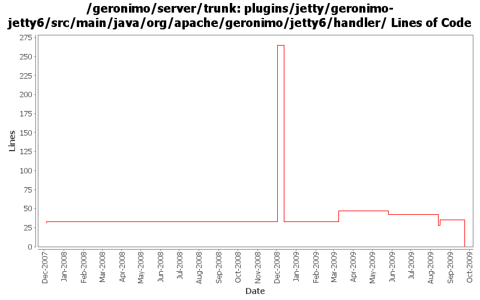

[root]/plugins/jetty/geronimo-jetty6/src/main/java/org/apache/geronimo/jetty6/handler

| Author | Changes | Lines of Code | Lines per Change |
|---|---|---|---|
| Totals | 30 (100.0%) | 285 (100.0%) | 9.5 |
| dwoods | 9 (30.0%) | 237 (83.2%) | 26.3 |
| djencks | 16 (53.3%) | 42 (14.7%) | 2.6 |
| jbohn | 2 (6.7%) | 5 (1.8%) | 2.5 |
| jlaskowski | 1 (3.3%) | 1 (0.4%) | 1.0 |
| gawor | 2 (6.7%) | 0 (0.0%) | 0.0 |
some pom cleanup and remove old jetty6 plugin files
0 lines of code changed in 7 files:
GERONIMO-4645 fix WebUserDataPermission ':' escaping
16 lines of code changed in 1 file:
GERONIMO-4645 use jacc ejb ws auth for jetty6, simplify SOAPHandler interface
5 lines of code changed in 1 file:
GERONIMO-4553 Make web use of security realms depend on plugin visibility; make console expose the 'global' attribute for configuration (renamed from 'publish'). Also merges in geronimo-security changes from sandbox branches.
5 lines of code changed in 1 file:
GERONIMO-4577 upgrade jetty to 6.1.14. There are dependency problems I don't understand with 6.1.15, but this gets the api changes in.
14 lines of code changed in 2 files:
Clear PolicyContext handler data object. Not optimal but better than before (GERONIMO-4574)
0 lines of code changed in 2 files:
GERONIMO-4437 revert jetty 6.1.14 changes
5 lines of code changed in 2 files:
GERONIMO-4437 Upgrade to Jetty 6.1.14
237 lines of code changed in 2 files:
header fixes (Rev, Date)
1 lines of code changed in 1 file:
GERONIMO-3609 Better fix for supplying jndi on forwarded calls as well as for servlet listeners
2 lines of code changed in 11 files: